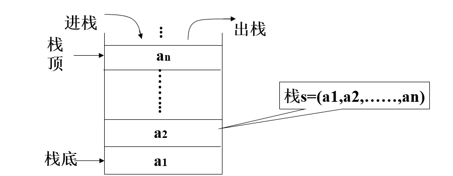
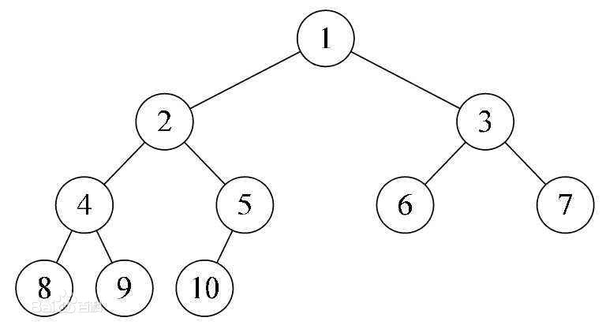

Day01回顾
数据结构、算法、程序
x
1【1】数据结构: 解决问题时使用何种数据类型，数据到底如何保存，只是静态描述了数据元素之间的关系2【2】算法: 解决问题的方法，为了解决实际问题而设计的，数据结构是算法需要处理的问题载体3【3】程序: 数据结构 + 算法数据结构分类
x
1【1】线性结构 : 多个数据元素的有序集合21.1) 顺序存储 - 线性表3a> 定义: 将数据结构中各元素按照其逻辑顺序存放于存储器一片连续的存储空间中4b> 示例: 顺序表、列表5c> 特点: 内存连续，溢出时开辟新的连续内存空间进行数据搬迁并存储671.2) 链式存储 - 线性表8a> 定义: 将数据结构中各元素分布到存储器的不同点，用记录下一个结点位置的方式建立联系9b> 示例: 单链表、单向循环链表10c> 特点:11单链表: 内存不连续，每个节点保存指向下一个节点的指针，尾节点指针指向"None"12单向循环链表: 内存不连续，每个节点保存指向下一个节点指针，尾节点指针指向"头节点"131.3) 栈 - 线性表14a> 后进先出 - LIFO15b> 栈顶进行入栈、出栈操作，栈底不进行任何操作16c> 顺序存储实现栈、链式存储实现栈171.4) 队列 - 线性表18a> 先进先出 - FIFO19b> 队尾进行入队操作、队头进行出队操作20c> 顺序存储实现队列、链式存储实现队列算法效率衡量-时间复杂度T(n)
x
1【1】定义: 算法执行步骤的数量23【2】分类42.1) 最优时间复杂度52.2) 最坏时间复杂度 - 平时所说62.3) 平均时间复杂度78【3】时间复杂度大O表示法 T(n) = O(??)9去掉执行步骤的系数、常数、低次幂1011【4】常见时间复杂度排序12O(1)<O(logn)<O(n)<O(nlogn)<O(n2)<O(n2logn)<O(n3)
Day02笔记
作业讲解
链表作业题一
题目描述 + 试题解析
x
1【1】题目描述2输入一个链表，输出该链表中倒数第 k 个节点34【2】试题解析5可将链表中的每一个元素保存到列表中，在列表中寻找倒数第 k 个元素代码实现
xxxxxxxxxx371"""2输入一个链表，输出该链表中倒数第 k 个节点3思路:41、链表只能从头到尾遍历,从尾到头遍历存在难度52、从头到尾遍历,将节点数据添加到一个列表中63、利用列表的下标索引取出对应的节点数据7"""8class Node:9"""节点类"""10def __init__(self, value):11self.value = value12self.next = None1314class Solution:15def get_k_node(self, head, k):16# 1.把链表中节点数据添加到列表中17li = []18cur = head19while cur:20li.append(cur.value)21cur = cur.next22# 2.利用列表的索引取出对应值23if k > len(li):24raise IndexError('list index out of range')2526return li[-k]2728if __name__ == '__main__':29s = Solution()30# 创建链表: 100 -> 200 -> 300 -> None31head = Node(100)32head.next = Node(200)33head.next.next = Node(300)34# 终端1: 20035print(s.get_k_node(head, 2))36# 终端2: list index out of range37print(s.get_k_node(head, 8))
链表作业题二
题目描述 + 试题解析
x
1【1】题目描述2输入两个单调递增的链表，输出两个链表合成后的链表，当然我们需要合成后的链表满足单调不减规则34【2】试题解析5a> 比较两个链表的头节点，确认合成后链表的头节点6b> 继续依次比较两个链表元素的大小，将元素小的结点插入到新的链表中，直到一个链 表为空代码实现
xxxxxxxxxx691"""2输入两个单调递增的链表，输出两个链表合成后的链表，当然我们需要合成后的链表满足单调不减规则3思路:41、程序最终返回的是: 合并后的链表的头节点52、先确定新链表的头节点63、互相比较,移动值小的游标7"""8class Node:9"""节点类"""10def __init__(self, value):11self.value = value12self.next = None1314class Solution:15def merge_two_link_list(self, head1, head2):16# 1.确定新链表的头节点17h1 = head118h2 = head219if h1 and h2:20if h1.value >= h2.value:21merge_head = h222h2 = h2.next23else:24merge_head = h125h1 = h1.next26# p即为最终返回的结果27p = merge_head28elif h1:29return h130else:31return h232# 2.遍历两个链表进行比较合并33while h1 and h2:34if h1.value <= h2.value:35merge_head.next = h136h1 = h1.next37else:38merge_head.next = h239h2 = h2.next40# 移动新链表的游标41merge_head = merge_head.next4243# 3.循环结束后,一定有一个游标为None(或者说一定有一个链表遍历完了)44if h2:45merge_head.next = h246elif h1:47merge_head.next = h14849# 4.最终返回新链表的头节点50return p5152if __name__ == '__main__':53s = Solution()54# 链表1: 100 -> 200 -> 300 -> 400 -> None55head1 = Node(100)56head1.next = Node(200)57head1.next.next = Node(300)58head1.next.next.next = Node(400)59# 链表2: 1 -> 200 -> 600 -> 800 -> None60head2 = Node(1)61head2.next = Node(200)62head2.next.next = Node(600)63head2.next.next.next = Node(800)64# 合并65p = s.merge_two_link_list(head1, head2)66# 结果: 1 100 200 200 300 400 600 80067while p:68print(p.value, end=' ')69p = p.next
链表作业题三
题目描述 + 试题解析
x
1【1】题目描述2输入两个链表，找出它们的第一个公共节点34【2】试题解析5如果有公共节点，则两个链表公共节点后面的节点一定完全相同，因为节点有数据区和指针区，而next只能指向1个节点67思路：8stack1 = [] 存储第1个链表中的节点9stack2 = [] 存储第2个链表中的节点1011两边同时pop，后面节点一定相同，一直找到最后1个相同的节点即可代码实现
xxxxxxxxxx621"""2输入两个链表，找出它们的第一个公共节点3思路:41. 两个链表中,从第一个公共节点开始,后面的节点一定都是公共节点52. 先把两个链表中所有节点添加到两个列表中63. 从后往前判断节点,到最后一个公共节点时返回7示例: a is b8"""9class Node:10"""节点类"""11def __init__(self, value):12self.value = value13self.next = None1415class Solution:16def get_first_public_node(self, head1, head2):17# 1.创建2个列表,把节点分别添加进去18li1 = []19li2 = []20cur1 = head121while cur1:22li1.append(cur1)23cur1 = cur1.next24cur2 = head225while cur2:26li2.append(cur2)27cur2 = cur2.next2829# 2. 从两个列表中最后一个元素开始往前依次判断30# 一旦发现第一个不是公共节点的,则上一个判断的公共节点就是第一个公共节点31# Li1: [ Node(100), Node(200), Node(300), Node(400) ]32# Li2: [ Node(666), Node(300), Node(400) ]33node = None34while li1 and li2:35if li1[-1] is li2[-1]:36node = li1.pop()37li2.pop()38else:39li1.pop()40li2.pop()4142return node4344if __name__ == '__main__':45s = Solution()46n100 = Node(100)47n200 = Node(200)48n300 = Node(300)49n400 = Node(400)50n666 = Node(666)51# 链表1: 100 -> 200 -> 300 -> 400 -> None52head1 = n10053head1.next = n20054n200.next = n30055n300.next = n40056# 链表2: 666 -> 300 -> 400 -> None57head2 = n66658head2.next = n30059n300.next = n40060# 测试方法: 第一个公共节点应该是 Node(300)61node = s.get_first_public_node(head1, head2)62print(node.value)
线性表 - 栈（LIFO)
定义
xxxxxxxxxx11栈是限制在一端进行插入操作和删除操作的线性表（俗称堆栈），允许进行操作的一端称为"栈顶"，另一固定端称为"栈底"，当栈中没有元素时称为"空栈"特点
xxxxxxxxxx21【1】栈只能在一端进行数据操作2【2】栈模型具有后进先出的规律（LIFO）

顺序栈代码实现
xxxxxxxxxx381"""2顺序存储的方式实现栈3思路：41、栈 ：LIFO 后进先出52、设计6列表尾部作为栈顶（入栈、出栈操作）7列表头部作为栈底（不进行任何操作）8"""9class Stack:10def __init__(self):11"""初始化一个空栈"""12self.elems = []1314def is_empty(self):15"""判断栈是否为空栈"""16return self.elems == []1718def push(self, item):19"""入栈: 相当于在链表尾部添加1个元素"""20self.elems.append(item)2122def destack(self):23"""出栈: 相当于在列表尾部弹出1个元素"""24if self.is_empty():25raise Exception('destack from empty stack')26return self.elems.pop()2728if __name__ == '__main__':29s = Stack()30# 栈(栈底->栈顶): 100 200 30031s.push(100)32s.push(200)33s.push(300)34# 终端1: 300 200 100 异常35print(s.destack())36print(s.destack())37print(s.destack())38print(s.destack())链式栈代码实现
xxxxxxxxxx481"""2链式存储方式实现栈3思路：41、栈：LIFO 后进先出52、设计6链表头部作为栈顶（入栈、出栈操作）7链表尾部作为栈底（不进行任何操作）8"""9class Node:10"""节点类"""11def __init__(self, value):12self.value = value13self.next = None1415class LinkListStack:16def __init__(self):17"""初始化一个空栈"""18self.head = None1920def is_empty(self):21"""判断是否为空栈"""22return self.head == None2324def push(self, item):25"""入栈操作: 相当于在链表的头部添加一个节点"""26node = Node(item)27node.next = self.head28self.head = node2930def pop(self):31"""出栈操作: 相当于删除链表头节点"""32if self.is_empty():33raise Exception('pop from empty LinkListStack')34item = self.head.value35self.head = self.head.next3637return item3839if __name__ == '__main__':40s = LinkListStack()41# 栈（栈底->栈顶）：300 200 10042s.push(100)43s.push(200)44s.push(300)45# 终端1: 30046print(s.pop())47# 终端2: False48print(s.is_empty())
线性表 - 队列（FIFO）
定义
x
1队列是限制在两端进行插入操作和删除操作的线性表，允许进行存入操作的一端称为"队尾"，允许进行删除操作的一端称为"队头"特点
xxxxxxxxxx211) 队列只能在队头和队尾进行数据操作22) 队列模型具有先进先出规律（FIFO）

顺序队列代码实现
xxxxxxxxxx371"""2顺序存储方式去实现队列模型3思路：41、队列：FIFO 先进先出,队尾负责入队,队头负责出队52、设计：6列表头部作为队头,负责出队7列表尾部作为队尾,负责入队8"""9class Queue:10def __init__(self):11"""初始化一个空队列"""12self.elems = []1314def is_empty(self):15"""判断队列是否为空"""16return self.elems == []1718def enqueue(self, item):19"""队尾入队: append(item)"""20self.elems.append(item)2122def dequeue(self):23"""队头出队: pop(0)"""24if self.is_empty():25raise Exception('dequeue from empty Queue')26return self.elems.pop(0)2728if __name__ == '__main__':29q = Queue()30# 队列: 100 200 30031q.enqueue(100)32q.enqueue(200)33q.enqueue(300)34# 终端1: 10035print(q.dequeue())36# 终端2: False37print(q.is_empty())链式队列代码实现
xxxxxxxxxx571"""2链式存储方式去实现队列3思路：41、队列：FIFO 先进先出52、设计：6链表头部作为队头,负责出队操作7链表尾部作为队尾,负责入队操作8"""9class Node:10def __init__(self, value):11self.value = value12self.next = None1314class LinkListQueue:15def __init__(self):16"""初始化一个空队列"""17self.head = None1819def is_empty(self):20"""判断队列是否为空"""21return self.head == None2223def enqueue(self, item):24"""队尾入队: 相当于在链表尾部添加一个节点"""25node = Node(item)26# 空队列情况27if self.is_empty():28self.head = node29return30# 非空队列31cur = self.head32while cur.next:33cur = cur.next34# 循环结束后,cur一定是指向了原链表尾节点35cur.next = node36node.next = None3738def dequeue(self):39"""队头出队: 相当于删除链表头节点"""40if self.is_empty():41raise Exception('dequeue from empty LinkListQueue')42cur = self.head43# 删除头节点44self.head = self.head.next4546return cur.value4748if __name__ == '__main__':49q = LinkListQueue()50# 队列: 100 200 30051q.enqueue(100)52q.enqueue(200)53q.enqueue(300)54# 终端1: 10055print(q.dequeue())56# 终端2: False57print(q.is_empty())栈和队列练习一
题目描述+试题解析
x
1【1】题目描述2用两个栈来实现一个队列，完成队列的 Push 和 Pop 操作。队列中的元素为 int 类型34【2】试题解析51、队列特点：先进先出（时刻铭记保证先进先出）62、栈 A 用来做入队列，栈 B 用来做出队列，当栈 B 为空时，栈 A 全部出栈到栈 B，栈B 再出栈(即出队列)73、精细讲解8stack_a: 入队列（队尾）9stack_b: 出队列（队头）1011stack_a队尾: [1,2,3]12stack_b队头: []13stack_b.append(stack_a.pop()) # [3,2,1]14stack_b.pop() # 1代码实现
xxxxxxxxxx431"""2用两个栈来实现一个队列，完成队列的 Push 和 Pop 操作。队列中的元素为 int 类型3思路:41、明确目标: 实现队列(FIFO)52、实现载体: 2个栈(LIFO)63、设计(计划使用顺序栈模型,暂时不使用链式栈模型)7栈A(列表A) : 入队8栈B(列表B) : 出队9"""10class Solution:11def __init__(self):12"""先初始化两个空栈"""13self.stack_a = []14self.stack_b = []1516def push(self, item):17"""入队操作: 相当于在栈stack_a中添加一个元素"""18self.stack_a.append(item)1920def pop(self):21"""出队操作: 相当于在栈stack_b中弹出一个元素"""22# 先从栈stack_b中pop()出栈23if self.stack_b:24return self.stack_b.pop()2526# 栈stact_b为空时,把栈stack_a中的所有元素再添加到栈stack_b中27while self.stack_a:28self.stack_b.append(self.stack_a.pop())2930# 循环结束后,把stack_a中的所有元素添加到了stack_b中31if self.stack_b:32return self.stack_b.pop()3334if __name__ == '__main__':35s = Solution()36# 入队: 100 200 30037s.push(100)38s.push(200)39s.push(300)40# 出队: 100 200 30041print(s.pop())42print(s.pop())43print(s.pop())
树形结构
定义
x
1树（Tree）是n（n≥0）个节点的有限集合T，它满足两个条件：有且仅有一个特定的称为根（Root）的节点；其余的节点可以分为m（m≥0）个互不相交的有限集合T1、T2、……、Tm，其中每一个集合又是一棵树，并称为其根的子树（Subtree）

基本概念
x
1# 1. 树的特点2* 每个节点有零个或者多个子节点3* 没有父节点的节点称为根节点4* 每一个非根节点有且只有一个父节点5* 除了根节点外,每个子节点可以分为多个不相交的子树67# 2. 相关概念81) 节点的度: 一个节点的子树的个数92) 树的度: 一棵树中,最大的节点的度成为树的度103) 叶子节点: 度为0的节点114) 父节点125) 子节点136) 兄弟节点147) 节点的层次: 从根开始定义起,根为第1层158) 深度: 树中节点的最大层次

二叉树
定义
xxxxxxxxxx11二叉树（Binary Tree）是n（n≥0）个节点的有限集合，它或者是空集（n＝0），或者是由一个根节点以及两棵互不相交的、分别称为左子树和右子树的二叉树组成。二叉树与普通有序树不同，二叉树严格区分左孩子和右孩子，即使只有一个子节点也要区分左右

二叉树的分类 - 见图
x
1【1】满二叉树2所有叶节点都在最底层的完全二叉树34【2】完全二叉树5对于一颗二叉树，假设深度为d，除了d层外，其它各层的节点数均已达到最大值，并且第d层所有节点从左向右连续紧密排列67【3】二叉排序树8任何一个节点，所有左边的值都会比此节点小，所有右边的值都会比此节点大910【4】平衡二叉树11当且仅当任何节点的两棵子树的高度差不大于1的二叉树二叉树 - 添加元素代码实现
xxxxxxxxxx401"""2二叉树3"""45class Node:6def __init__(self, value):7self.value = value8self.left = None9self.right = None1011class Tree:12def __init__(self, node=None):13"""创建了一棵空树或者是只有树根的树"""14self.root = node1516def add(self, value):17"""在树中添加一个节点"""18node = Node(value)19# 空树情况20if self.root is None:21self.root = node22return2324# 不是空树的情况25node_list = [self.root]26while node_list:27cur = node_list.pop(0)28# 判断左孩子29if cur.left is None:30cur.left = node31return32else:33node_list.append(cur.left)3435# 判断右孩子36if cur.right is None:37cur.right = node38return39else:40node_list.append(cur.right)
广度遍历 - 二叉树
广度遍历 - 代码实现
xxxxxxxxxx181def breadth_travel(self):2"""广度遍历 - 队列思想（即：列表的append()方法 和 pop(0) 方法"""3# 1、空树的情况4if self.root is None:5return6# 2、非空树的情况7node_list = [self.root]8while node_list:9cur = node_list.pop(0)10print(cur.value, end=' ')11# 添加左孩子12if cur.left is not None:13node_list.append(cur.left)14# 添加右孩子15if cur.right is not None:16node_list.append(cur.right)1718print()
深度遍历 - 二叉树
x
1【1】遍历2 沿某条搜索路径周游二叉树，对树中的每一个节点访问一次且仅访问一次。34【2】遍历方式5 2.1) 前序遍历： 先访问树根，再访问左子树，最后访问右子树 - 根 左 右6 2.2) 中序遍历： 先访问左子树，再访问树根，最后访问右子树 - 左 根 右7 2.3) 后序遍历： 先访问左子树，再访问右子树，最后访问树根 - 左 右 根

x
1【1】前序遍历结果: 1 2 4 8 9 5 10 3 6 72【2】中序遍历结果: 8 4 9 2 10 5 1 6 3 73【3】后序遍历结果: 8 9 4 10 5 2 6 7 3 1深度遍历 - 代码实现
x
1# 前序遍历2def pre_travel(self, node):3"""前序遍历 - 根左右"""4if node is None:5return67print(node.value, end=' ')8self.pre_travel(node.left)9self.pre_travel(node.right)1011# 中序遍历12def mid_travel(self, node):13"""中序遍历 - 左根右"""14if node is None:15return1617self.mid_travel(node.left)18print(node.value, end=' ')19self.mid_travel(node.right)2021# 后续遍历22def last_travel(self, node):23"""后序遍历 - 左右根"""24if node is None:25return2627self.last_travel(node.left)28self.last_travel(node.right)29print(node.value, end=' ')二叉树完整代码
xxxxxxxxxx1091"""2python实现二叉树3"""45class Node:6def __init__(self, value):7self.value = value8self.left = None9self.right = None1011class Tree:12def __init__(self, node=None):13"""创建了一棵空树或者是只有树根的树"""14self.root = node1516def add(self, value):17"""在树中添加一个节点"""18node = Node(value)19# 空树情况20if self.root is None:21self.root = node22return2324# 不是空树的情况25node_list = [self.root]26while node_list:27cur = node_list.pop(0)28# 判断左孩子29if cur.left is None:30cur.left = node31return32else:33node_list.append(cur.left)3435# 判断右孩子36if cur.right is None:37cur.right = node38return39else:40node_list.append(cur.right)4142def breadth_travel(self):43"""广度遍历 - 队列思想（即：列表的append()方法 和 pop(0) 方法"""44# 1、空树的情况45if self.root is None:46return47# 2、非空树的情况48node_list = [self.root]49while node_list:50cur = node_list.pop(0)51print(cur.value, end=' ')52# 添加左孩子53if cur.left is not None:54node_list.append(cur.left)55# 添加右孩子56if cur.right is not None:57node_list.append(cur.right)5859print()6061def pre_travel(self, node):62"""前序遍历 - 根左右"""63if node is None:64return6566print(node.value, end=' ')67self.pre_travel(node.left)68self.pre_travel(node.right)6970def mid_travel(self, node):71"""中序遍历 - 左根右"""72if node is None:73return7475self.mid_travel(node.left)76print(node.value, end=' ')77self.mid_travel(node.right)7879def last_travel(self, node):80"""后序遍历 - 左右根"""81if node is None:82return8384self.last_travel(node.left)85self.last_travel(node.right)86print(node.value, end=' ')8788if __name__ == '__main__':89tree = Tree()90tree.add(1)91tree.add(2)92tree.add(3)93tree.add(4)94tree.add(5)95tree.add(6)96tree.add(7)97tree.add(8)98tree.add(9)99tree.add(10)100# 广度遍历：1 2 3 4 5 6 7 8 9 10101tree.breadth_travel()102# 前序遍历：1 2 4 8 9 5 10 3 6 7103tree.pre_travel(tree.root)104print()105# 中序遍历:8 4 9 2 10 5 1 6 3 7106tree.mid_travel(tree.root)107print()108# 后序遍历：8 9 4 10 5 2 6 7 3 1109tree.last_travel(tree.root)
二叉树练习
题目描述+试题解析
x
1【1】题目描述2从上到下按层打印二叉树，同一层结点从左至右输出，每一层输出一行34【2】试题解析51、广度遍历，利用队列思想62、要有2个队列，分别存放当前层的节点 和 下一层的节点代码实现
x
1class Node:2def __init__(self, value):3self.value = value4self.left = None5self.right = None67class Solution:8def print_node_layer(self, root):9# 空树情况10if root is None:11return []12# 非空树情况13cur_queue = [root]14next_queue = []15while cur_queue:16cur_node = cur_queue.pop(0)17print(cur_node.value, end=" ")18# 添加左右孩子到下一层队列19if cur_node.left:20next_queue.append(cur_node.left)21if cur_node.right:22next_queue.append(cur_node.right)23# 判断cur_queue是否为空24# 为空：说明cur_queue已经打印完成,并且next_queue已经添加完成,交换变量25if not cur_queue:26cur_queue, next_queue = next_queue, cur_queue27print()2829if __name__ == '__main__':30s = Solution()31p1 = Node(1)32p2 = Node(2)33p3 = Node(3)34p4 = Node(4)35p5 = Node(5)36p6 = Node(6)37p7 = Node(7)38p8 = Node(8)39p9 = Node(9)40p10 = Node(10)41p1.left = p242p1.right = p343p2.left = p444p2.right = p545p3.left = p646p3.right = p747p4.left = p848p4.right = p949p5.left = p1050s.print_node_layer(p1)